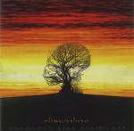

| Artist: | Discipline |
| Title: | Unfolded Like Staircase |
| Label: | Strung Out |
| Length(s): | 65 minutes |
| Year(s) of release: | 1997 |
| Month of review: | 11/1997 |
| 1) | Canto IV (limbo) | 13.47 |
| 2) | Crutches | 13.10 |
| 3) | Into The Dream | 22.03 |
| 4) | Before The Storm | 5.20 |
| 5) | Before The Storm (continues) | 10.31 |
Crutches opens balladlike but potent with percussive piano and a good vocal melody. A little organ in the back is hardly noticeable, but lends the atmosphere and the mellotron steps in once in a while as well. The next part starts acoustic but becomes more threatening along the way with tasteful moodmakers such as the mellotron and also the msucled and at times angry vocals of Parmenter. The third part is even more up-tempo and driving, and only when we get to the fourth and last part, we get out of stormy waters. This more ballad like ending reminds me again of Genesis with guitar work reminiscent of Firth of Fifth, but also some mood and tempo changes we get parts influenced by KC and Anekdoten, but also some more flowing melodic parts and even some direct references to Van Der Graaf Generator (not for nothing does Parmenter thank Anekdoten for introducing him to PH and VDGG).
The epic of the album is Into The Dream (in seven parts). After a slightly dissonant opening and subsequently some mellotron we get some dark low vocals with acoustic and piano accompaniment, a wailing guitar in the back and and the word Genesis enters my mind. The next part is darker, menacing with a strong build up and mellotron lacings. In a following part the organ paves the way majestically for the mellotron, but unexpectedly we first get a pianic part before the driving rhythm guitar takes over and the song comes to its first emotional climax. The next climax arises at the end of the fifth part, but for my sake it could have been louder and more bombastic. But the bells of heaven are clanging and the mellotron sends a message of hope on release in the last part. The following guitaristic exercise makes little sense to me though, but fortunately the song ends on a melodic note.
The "last" track is Before The Storm. The song enjoys a good vocal melody and starts quite moody with soft drumming and a quietly wailing guitar. The song is a dark one with distinct VDGG influences and the mellotron drenched second part of the track enjoys a good and long build up ending in more vocals and moving into in the third part the vocals continue singing a song of hope and there's even some time for quirkiness here although the music and lyrics are quite serious and somber. After the last vocals the mellotron, violin and guitars are allowed to unwinw until finish a few minutes later.